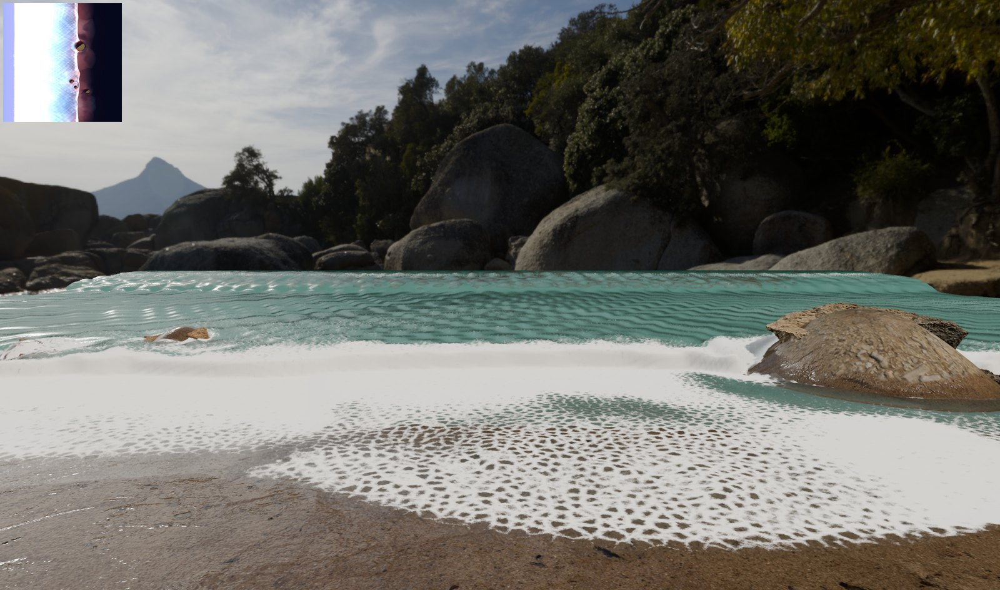
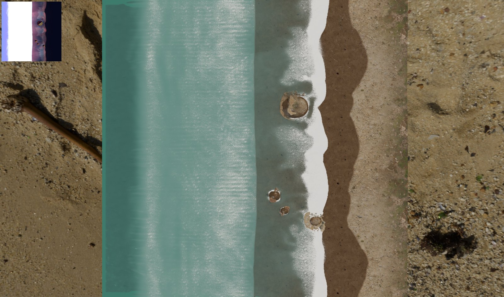
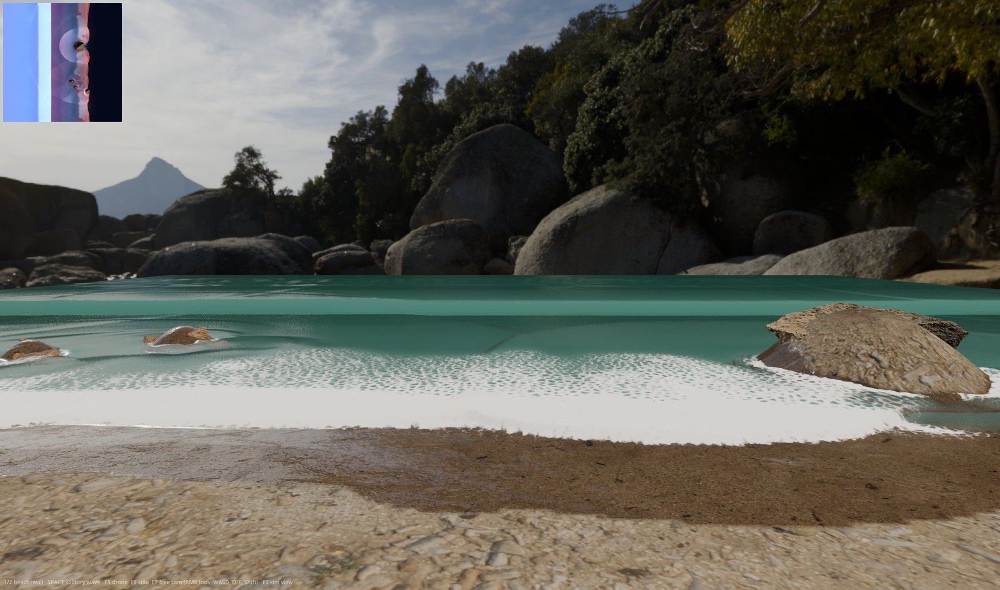
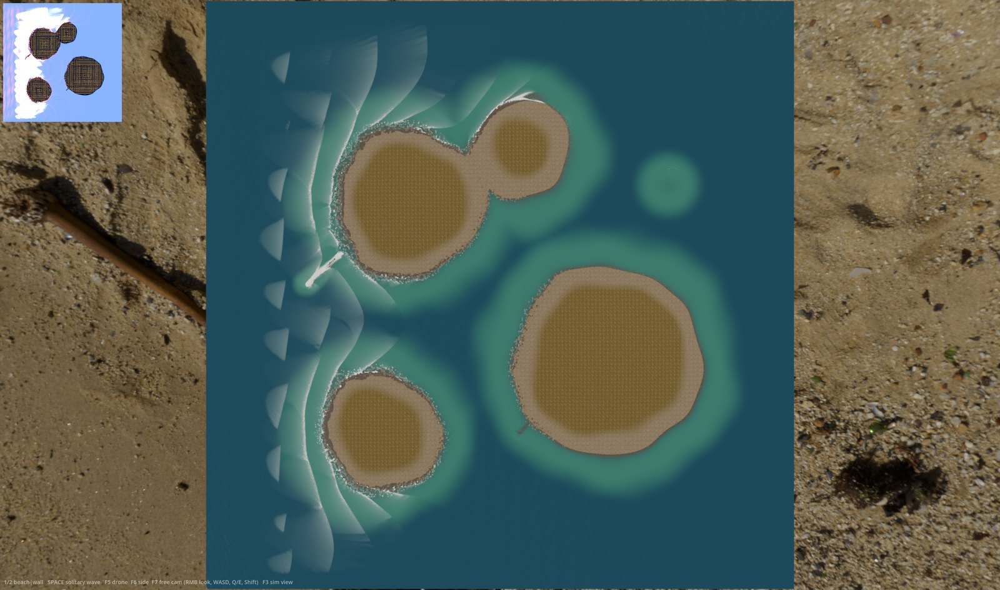
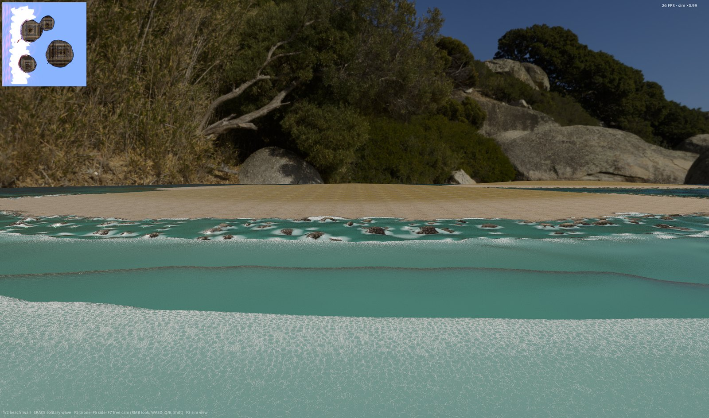
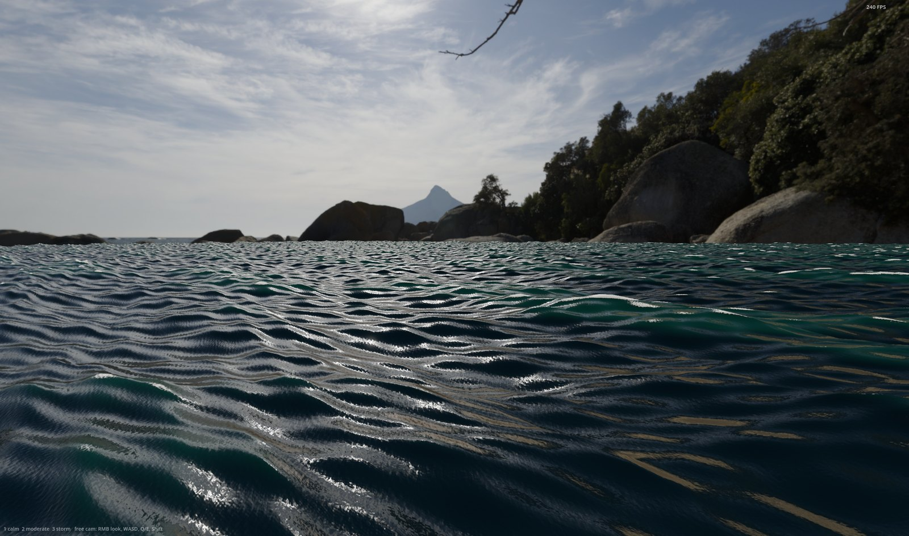
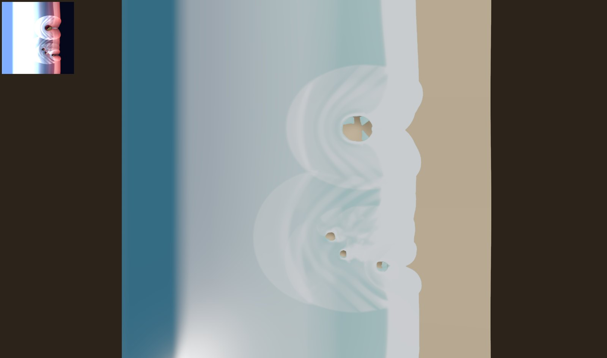
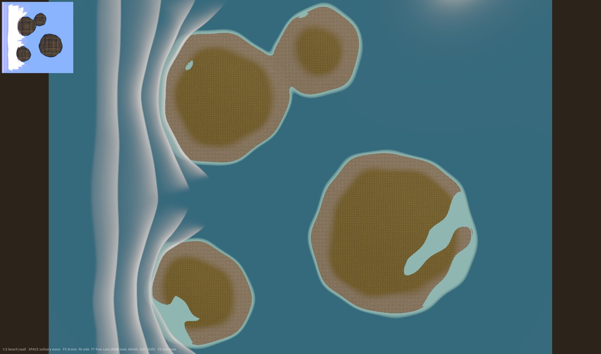

Realistic Shoreline Waves
A real-time shallow-water solver for Godot 4.7 that produces breaking waves, swash, foam, and wet sand from actual fluid dynamics, plus a standalone Gerstner deep-water ocean. Every visible water effect in the demos comes from physics running on the GPU; nothing is a scrolling texture pretending to move.

Quick start
- Download Godot 4.7 stable (or newer) for Windows from godotengine.org.
- Drop the Godot
.exeinto this folder, next to the.batlaunchers. - Run one of the launchers:
launch.bat: close-up beach, 30 x 30 m at 5 cm resolution.island.bat: 2 x 2 km archipelago, 4.2 million simulation cells.openocean.bat: deep-water Gerstner ocean, no solver, very fast.
The renderer must be Forward+ (the project default). The simulation dispatches compute shaders, which the mobile and compatibility renderers do not support. Headless mode cannot run the simulation either: Godot exposes no RenderingDevice there.
The demos
Beach (launch.bat)
A 30.4 x 30.4 m shore strip at 5 cm cells: irregular waves shoal, break into bores, wash around photoscanned boulders, and drain back. Watch the wet sand darken and dry, and the foam arcs the backwash leaves behind. Keys inside all solver demos:
| Key | Action |
|---|---|
| 1 / 2 / 3 | Beach / quay wall / dam-break test scenario (same grid, switched live) |
| Space | Inject a solitary wave (one clean breaker; in the island demo it is a 7.5 m monster) |
| F5 / F6 / F7 | Drone camera / shore camera / free camera (right mouse to look, WASD, Q/E, Shift) |
| F3 | False-color view of the raw simulation fields (depth, speed, foam) |

Quay wall (key 2 inside the beach demo)
A vertical masonry wall stands in 0.5 m of water. Small waves reflect into a standing pattern (clapotis) that doubles the amplitude at the wall face, matching the textbook value. Larger waves break against the stone. The wall needs no special code: it is a step in the bathymetry, and the solver does the rest.

Island archipelago (island.bat)
The same solver at map scale: 2048 x 2048 cells at 1 m over 2 x 2 km. Four islands, a submerged shoal that trips waves offshore, a breakwater whose crest sits 0.9 m above sea level so large sets pour over it, a terraced rock shelf, a boulder-field shore, and a submerged groyne. A short-crested sea (wave components arriving from several directions) crosses the map, refracts around every headland, and breaks on every coast. A visual deep-water layer adds surface character where the sea is deeper than 9 m and fades out near every shore so the solver owns the surf zone.


Open ocean (openocean.bat)
The standalone Gerstner scene: eight trochoidal wave components on a 3 km plane, no solver, hundreds of frames per second. Keys 1/2/3 switch calm, moderate, and storm presets. See the Gerstner section for how to restyle it.

Command-line arguments
All demos accept arguments after -- for scripted runs and testing:
Godot_v4.7-stable_win64_console.exe --path . -- scenario=beach amp=0.25 period=7 cam=drone shots=30,60 out=C:/tmp prefix=test| Argument | Meaning |
|---|---|
scenario= | beach, wall, dambreak, or ocean |
amp= / period= | Primary wave amplitude (m) and period (s); 0 or absent uses the scenario default |
wave=0 | Wavemaker off (still water; useful to inspect terrain or test solitary waves) |
solo=N | Fire a solitary wave N seconds after start |
look=debug | Flat materials and a plain sky; the fastest way to study the simulation itself |
cam= / shots= / out= / prefix= | Select a camera, save screenshots at the given times (seconds), then exit |
sea= | Open-ocean scene only: calm, moderate, or storm |
Scientific background: why this works
The equations
Surf is shallow-water physics. When the water depth is small compared to the wavelength, the Navier-Stokes equations reduce to the nonlinear shallow water equations (NLSW): one equation for mass and two for depth-integrated momentum. The state per cell is (w, hu, hv), where w = B + h is the free surface, B the bed elevation, h the depth, and hu, hv the momentum. A fourth carried quantity, hc, transports foam with the same machinery.
NLSW has a property that is a gift for surf rendering: it steepens waves into shocks, and a shock in shallow water IS a turbulent bore, the broken white wave front that slides up a beach. The solver does not need to fake breaking; breaking is what the mathematics does in shallowing water.
The scheme
The kernels implement the central-upwind finite-volume scheme of Kurganov and Petrova (2007), chosen for three properties that matter at a shoreline:
- Positivity: reconstructed water depths can never go negative, so the moving wet/dry line needs no tracking and no special cases. The swash tongue is just cells whose depth passes through zero.
- Well-balancing: a lake at rest on a sloped bed stays exactly at rest. Without this, the beach slope itself drives phantom currents. The implementation detail that makes it work: when reconstruction would push a face value under the bed, the slope is shifted so that face is exactly dry, and the bed source term is built from those corrected face depths. Flux and source then cancel identically at rest.
- Shock capturing: bores form with the correct propagation speed and energy loss, so waves visibly slow and shrink as they run in, following the sqrt(g h) speed law.
Two practical additions keep the scheme quiet in hard spots. First, velocity desingularization (Kurganov's u = sqrt(2) h hu / sqrt(h^4 + max(h^4, kappa^4))) prevents division blow-ups in films a few millimeters thin. Second, this package raises the desingularization length where the bed steps sharply within a cell: a velocity in water thinner than the sub-cell bed relief has no physical meaning, and damping it removes phantom eddies around boulders at zero visual cost.
Waves in, reflections out
Waves enter through the west boundary: ghost cells carry an analytic irregular sea (four components around a primary period, each with its own approach angle, wavenumbers from the Eckart dispersion approximation). In front of the boundary, a relaxation zone pulls the state toward that analytic solution with a strength that falls off quadratically over 80 cells. One mechanism therefore does two jobs: it generates the incoming sea and it absorbs whatever travels back out, which is what keeps reflected waves from building standing patterns. Coastal engineering codes use the same construction. One rule learned the hard way: oblique components must impose their full two-component momentum in the zone. Zeroing the transverse momentum injects shear and inflates the sea within a minute.
Foam and the ground memory
The foam amount is physics; the foam pattern is rendering. The simulation injects foam mass where the surface rises faster than 0.35 to 0.65 of sqrt(g h) (the breaking criterion of Kennedy et al., 2000), where the flow runs supercritical (bore faces), and in fast thin swash. It decays with a 4 s time constant and advects with the same conservative flux as the water, so foam streaks follow the actual currents around rocks. A separate ground field remembers what the water did: wetness (sand darkens instantly, dries over 45 s), stranded foam (deposited when a cell dries, the lace arcs on the sand), and impact intensity at steep obstacles (used to wet walls upward).
The rendering side turns smooth foam fields into believable texture with one trick used twice: a seamless Voronoi lace texture eroded from the black point, so foam tears hole-first and dies filament-last, plus a flow-advected UV scheme so the lace streams with the water without smearing.


look=debug): a short-crested sea crossing the domain, breaking on every west-facing shore.Verification
The solver carries its own instruments. A reduction kernel sums total water volume, maximum depth, maximum speed, wet-cell count, and NaN count into a small buffer that is read back asynchronously and printed every 30 frames. In a closed test box, the dam-break scenario holds its volume constant to six digits for minutes, which is the practical proof that the twice-computed face fluxes are bit-identical on both sides. If you modify the kernels, watch that number first.
References worth reading
- A. Kurganov, G. Petrova: A second-order well-balanced positivity preserving central-upwind scheme for the Saint-Venant system. Communications in Mathematical Sciences 5 (2007).
- A. R. Brodtkorb, M. L. Saetra, M. Altinakar: Efficient shallow water simulations on GPUs. Computers & Fluids 55 (2012).
- A. B. Kennedy, Q. Chen, J. T. Kirby, R. A. Dalrymple: Boussinesq modeling of wave transformation, breaking, and runup. Journal of Waterway, Port, Coastal, and Ocean Engineering 126 (2000). Source of the breaking thresholds.
- S. Tavakkol, P. Lynett: Celeris, a GPU-accelerated open source software for real-time coastal wave simulation. Computer Physics Communications 217 (2017). A validated nearshore model with the same architecture spirit.
- M. Finch: Effective water simulation from physical models. GPU Gems 1, chapter 1 (2004). The Gerstner formulation used by the open-ocean layer.
The Gerstner deep-water ocean
What it is and where it comes from
The open-ocean layer has nothing to do with the solver. It is a sum of eight Gerstner waves, the trochoidal wave that F. J. Gerstner described in 1802: each surface point moves in a circle, which displaces the surface horizontally toward crests and vertically upward, producing the sharp-crest/flat-trough shape real swell has. A plain sine sum lacks the horizontal motion and looks like rubber; the trochoid is what reads as water.
Two physical rules make the sum look like a sea instead of a pattern:
- Dispersion: in deep water, phase speed depends on wavelength:
omega = sqrt(g k). Long components outrun short ones, so the surface never repeats. The shader computes each component's speed from its wavelength; nothing is keyframed. - The cusp limit: the trochoid self-intersects when steepness Q times k times amplitude exceeds 1 across the sum. The shader normalizes the per-component steepness so the total stays below the
steepnessuniform, clamped at 1. Pushsteepnesstoward 1 for aggressive, near-cusping crests.
Whitecaps come from the same mathematics: where crests pinch, the horizontal displacement compresses the surface, and the Jacobian of that mapping drops below 1. The shader thresholds this value (foam_threshold) and erodes the Voronoi lace texture with it, so foam appears exactly on pinched crests. This is the standard technique from FFT ocean pipelines (Tessendorf-style), applied to a Gerstner sum.
Styling the sea
Everything is a uniform on shaders/gerstner_ocean.gdshader. The eight components derive from these knobs, so a handful of numbers restyles the whole ocean:
| Uniform | Default | What it does |
|---|---|---|
base_wavelength | 90 m | Longest component; the seven below it follow a geometric series (factor 0.62) |
amplitude | 1.1 m | Longest component amplitude; shorter ones scale by amp_falloff |
steepness | 0.75 | Trochoid sharpness of the whole sum: 0.3 is oily swell, 1.0 is on the cusp limit |
wind_dir_deg | 0 | Travel direction of the sea |
spread_deg | 28 | Directional spread: 5 gives long-crested swell lines, 40+ a confused crossing sea |
speed_scale | 1.0 | 1 is physically correct dispersion; lower for dreamy slow motion |
amp_falloff | 0.72 | Energy distribution: high values put energy into short chop, low values into clean swell |
foam_threshold / foam_amount | 0.62 / 1.0 | Where whitecaps start and how strongly they build |
water_color / sss_color | deep teal / green | Base absorption color and the green light bleed on thin backlit crests |
detail_normal_strength / detail_scale | 0.4 / 6.5 m | Wind-ripple micro normals from the bundled tileable normal map |
Pattern recipes
# glassy long swell from the west, no caps
base_wavelength = 140.0, amplitude = 0.8, steepness = 0.35,
spread_deg = 6.0, amp_falloff = 0.55, foam_amount = 0.0
# trade-wind chop
base_wavelength = 45.0, amplitude = 0.6, steepness = 0.85,
spread_deg = 35.0, amp_falloff = 0.85, foam_threshold = 0.55
# heavy weather
base_wavelength = 170.0, amplitude = 3.0, steepness = 0.95,
spread_deg = 40.0, foam_amount = 1.8, roughness_base = 0.12When to use which system
The Gerstner layer costs almost nothing and extends to the horizon, but it is a surface animation: it cannot interact with terrain, refract, or break on a shore. The solver interacts with everything but pays per cell and per meter of domain. The island demo shows the intended combination: the solver owns the map, and a Gerstner layer (built into the water shader, gerstner_amp) adds deep-water character that fades out below 9 m depth so the two never fight.
Using it in your project
What to copy
Copy these folders into your project: sim/ (compute kernels), scripts/sim_controller.gd, scripts/scenario.gd, shaders/, and whatever you need from assets/. The demo glue (main.gd, dev_shots.gd, free_cam.gd, the scenes) is replaceable; read main.gd once as the reference for wiring.
Minimal setup
# somewhere in your world setup
var sim := SimController.new()
sim.kind = SimController.Kind.BEACH # BEACH, WALL, DAM_BREAK, OCEAN
add_child(sim) # _ready builds GPU resources + scenario
# water surface: a PlaneMesh with the bundled shader
var water := MeshInstance3D.new()
var mesh := PlaneMesh.new()
mesh.size = Vector2(sim.domain, sim.domain)
mesh.subdivide_width = 606
mesh.subdivide_depth = 606
water.mesh = mesh
water.position = Vector3(sim.domain * 0.5, 0.0, sim.domain * 0.5)
var mat := ShaderMaterial.new()
mat.shader = load("res://shaders/water.gdshader")
mat.set_shader_parameter("tx_state", sim.tex_state) # zero-copy GPU textures
mat.set_shader_parameter("tx_bottom", sim.tex_bottom)
mat.set_shader_parameter("tx_derived", sim.tex_derived)
mat.set_shader_parameter("lace_tex", load("res://assets/generated/voronoi_lace.png"))
mat.set_shader_parameter("flow_noise_tex", load("res://assets/generated/flow_noise.png"))
mat.set_shader_parameter("DOMAIN_SIZE", sim.domain)
mat.set_shader_parameter("GRID_RES", float(sim.n))
water.material_override = mat
add_child(water)The four Texture2DRD properties (tex_state, tex_bottom, tex_derived, tex_ground) are live views of GPU memory: bind them to any material and it reads the simulation with no copies. They are black for the first frame or two while the render thread initializes; the bundled shaders tolerate that, and yours should too.
Changing the sea state at runtime
sim.wave_amp = 0.28 # metres
sim.wave_period = 7.0 # seconds
# takes effect immediately; the wavemaker reads these every substepFiring a single wave
sim.trigger_solitary() # one clean sech^2 breaker, height per scenario configReacting to the water from gameplay code
The simulation lives on the GPU and there is deliberately no per-frame CPU mirror. Two patterns cover most gameplay needs:
# cheap global signals: the debug readback (updated every 30 frames)
print(sim.dbg_max_speed) # e.g. trigger camera shake in heavy surf
print(sim.dbg_wet_cells) # how much of the map is under water
# sampling the water surface at a point (occasional, not per-frame per-object):
var img: Image = RenderingServer.get_rendering_device().texture_get_data(
sim.tex_state.texture_rd_rid, 0).decompress() # full-grid readback: expensive
For buoyancy on many objects, a better route is a small dedicated compute kernel that samples the state texture at object positions into a few-kilobyte buffer, read back with buffer_get_data_async. The debug kernel (sim/pass_debug.glsl) is a working template for exactly that pattern.
Custom bathymetry: your own shore
Option one, CPU (the beach and wall do this): edit scripts/scenario.gd. Its contract is small: produce a corner-height field, pack it into the bottom image (center, east face, north face, 3x3 max per cell), and build the visual terrain from the same corners. Faces must be the mean of their two corners; the solver's balance at rest depends on cell and face values coming from one consistent corner field.
# scenario.gd, inside the corner-height loop: a custom sandbar
var b := -1.2 + maxf(x - 6.0, 0.0) / 12.0 # base beach profile
b = maxf(b, -0.4 - pow((x - 14.0) / 3.0, 2.0)) # add a bar crest at x = 14 mOption two, GPU (the island does this): edit bcorner() in sim/pass_genbathy.glsl. Any analytic function of position works: islands, reefs, walls, terraces, boulder fields. The demo file contains all of those as commented building blocks (island(), breakwater(), boulders(), the terrace quantizer). Two rules: keep beach slopes gentler than about 1:10 where you want surf to run up, and give the wavemaker side deep, flat water.
Using the Gerstner ocean in your scene
var mat := ShaderMaterial.new()
mat.shader = load("res://shaders/gerstner_ocean.gdshader")
mat.set_shader_parameter("detail_normal_tex", load("res://assets/generated/detail_ripple_normal.png"))
mat.set_shader_parameter("lace_tex", load("res://assets/generated/voronoi_lace.png"))
mat.set_shader_parameter("wind_dir_deg", 35.0)
mat.set_shader_parameter("amplitude", 1.6)
$OceanPlane.material_override = matMatching a floating object to the surface is analytic, no readback needed: reimplement the same eight-component sum in GDScript with the same uniforms and evaluate the displacement at the object position. The component construction is 20 lines in the shader's ocean() function and ports directly.
Tuning reference
Simulation (scripts/sim_controller.gd and sim/*.glsl)
| Knob | Value | Effect |
|---|---|---|
CFG table | per scenario | Grid size, cell size, timestep, substep cap, depth, wavemaker mode. Add a scenario by adding a row and a bathymetry source. |
K_FOAM | 1.5 | Global foam production. Halve it before touching anything else if surf reads too white. |
| Foam decay tau | 4 s (pass_step) | Foam persistence between waves |
| Kennedy onset | 0.35 to 0.65 sqrt(gh) | Breaking sensitivity; below about 0.25 the open sea foams over |
MANNING | 0.03 | Bed friction: higher shortens swash run-up |
| kappa | 0.01 m (0.02 ocean) | Thin-film velocity damping; raise if shimmer appears around obstacles |
| Wetness / stranded / impact taus | 45 s / 10 s / 0.3 s (pass_ground) | Sand drying, lace arc decay, splash impulse decay |
| Relaxation zone | 80 cells, alpha 0.06 | Wave generation and absorption strength at the west edge |
Water surface (shaders/water.gdshader)
| Uniform | Default | Effect |
|---|---|---|
absorption | (1.8, 0.55, 0.9) per m | Water character. The default is murky green-teal; try (0.7, 0.25, 0.35) for tropical clarity |
scatter_color / deep_scatter | green-teal / ocean blue | In-scatter tint in shallow and deep water (blended by depth) |
foam_albedo | 0.85 | Foam brightness; drop toward 0.7 if bloom blows it out |
lace_scale_coarse / _fine | 1.2 / 0.12 m | Foam hole and filament sizes. These are screen-truth scales: do not scale them with the grid |
foam_breakup / breakup_scale | 0 / 4.5 m | Tears smooth foam fields into patches; essential on coarse grids (the island uses 0.8 / 7.0) |
detail_normal_strength / detail_base | 0.32 / 0 | Micro-ripple strength; detail_base adds ripples independent of flow speed |
gerstner_amp | 0 (island: 0.85) | Deep-water visual swell mixed over the solver, fading out below 9 m depth |
tuck_h | 0.004 (island: 0.06) | Shoreline blend depth; scale roughly with the cell size |
refraction_strength | 0.06 | Underwater distortion and the aeration blur |
Sand, wall, and island terrain
sand.gdshader: wet darkening (0.42 with 28% desaturation), mirror-film threshold (0.85 wetness), caustic strength. wall.gdshader: moss band height, splash wetting height. ocean_terrain.gdshader: splat tiling, grass band, blend-breaking noise. All values sit at the top of each file as annotated uniforms.
Performance
Measured on an RTX 4070 laptop GPU at 1920 x 1080:
| Demo | Cells | Frame rate | Simulation |
|---|---|---|---|
| Beach | 608 x 608 at 5 cm | 60 fps | real time, under 5% of the GPU |
| Island | 2048 x 2048 at 1 m | about 28 fps | real time (the FPS label shows "sim x1.00") |
| Open ocean | none | 200+ fps | not applicable |
The island demo is render-bound, not solver-bound, and already ships with FSR2 upscaling at 0.77, SSIL disabled over water, and a fused solver kernel (flux and integration in one dispatch; the split kernels pass_flux.glsl and pass_integrate.glsl remain in the package as readable references and are not dispatched). If you need more:
- Lower
scaling_3d_scalefurther (0.67 is still acceptable at 1080p). - Reduce the water and terrain mesh densities in
main.gd; per-pixel normals carry the detail. - Shrink the ocean grid in the
CFGtable: 1448 or 1024 cells with a matching dx keeps the same map size. Halving the resolution quarters the solver cost; raise DT with the cell size (keep the Courant number, roughly0.2 * dx / sqrt(9.81 * depth)). - The next structural win, unimplemented: workgroup shared-memory tiling in
pass_step.glsl, which cuts the stencil's texture reads about fourfold.
The substep cap and the 0.1 s accumulator cap in sim_controller.gd are load-bearing: they stop a slow frame from demanding more work and making the next frame slower. If the machine cannot keep up, the water runs in slight slow motion (the FPS label shows the factor) instead of spiraling.
Extending it
- Spray and splash particles: the ground field's blue channel already flags wall impacts and plunging breakers. A GPUParticles3D process shader that samples it (spawn where intensity is high, die elsewhere) adds the vertical jets a depth-averaged model cannot produce. This is the highest-value addition.
- Backwash streaks: stretch the lace UVs along the flow direction in thin, seaward-moving water for the classic drainage lines on the sand face.
- Dispersion offshore: NLSW waves in deep water are slightly too sawtooth. Boussinesq correction terms (see the Celeris paper) fix this at the cost of tridiagonal solves per row and column.
- Buoyancy service: a compute kernel sampling the state at N object positions into a small buffer, read asynchronously, gives floating props for a few microseconds per frame.
- Nested high-resolution window: coastal models run a coarse global grid with a fine local grid coupled at the edges. A 5 cm window inside the 1 m island map would give the beach demo's close-up quality at one chosen shore.
- Erosion: the bed is a texture; adding a sediment-transport pass that nudges it from the local velocity turns the beach into a slowly reshaping one.
File map
| Path | Contents |
|---|---|
sim/pass_step.glsl | The solver: KP07 reconstruction, fluxes, bed source, integration, friction, foam sources (fused kernel used at runtime) |
sim/pass_flux.glsl, sim/pass_integrate.glsl | The same scheme as two separate, more readable kernels; reference only |
sim/pass_boundary.glsl | Wavemaker ghosts, relaxation zone, mirror walls, map-edge absorbers |
sim/pass_derived.glsl, sim/pass_ground.glsl | Surface normals/foam/aeration; wetness, stranded foam, impact memory |
sim/pass_genbathy.glsl, sim/pass_init.glsl | GPU-generated island bathymetry and lake-at-rest initialization |
sim/pass_solitary.glsl, sim/pass_debug.glsl | Solitary-wave injection; volume/speed/NaN reduction readback |
scripts/sim_controller.gd | All RenderingDevice plumbing: textures, uniform sets, the substep loop, scenario configs |
scripts/scenario.gd | CPU bathymetry and terrain meshes for the beach and wall scenarios |
scripts/main.gd | Demo wiring: environment, meshes, materials, cameras, keys, FPS label |
scripts/gerstner_ocean_demo.gd, scenes/gerstner_ocean.tscn | The standalone open-ocean demo |
scripts/free_cam.gd, scripts/dev_shots.gd | Fly camera; scripted screenshot/exit rig for automated testing |
shaders/ | water, sand, wall, ocean terrain, Gerstner ocean, plus the flat debug materials |
assets/textures, assets/models, assets/hdri | PBR texture sets, photoscanned rocks, sky panoramas |
assets/generated, tools/gen_textures.py | Procedural lace/caustics/noise/ripple textures and the script that builds them |
Credits and licenses
Code and shaders: MIT license (see LICENSE.txt). Use them in anything, including commercial projects.
Textures, rock models, and sky panoramas: Poly Haven, CC0 (public domain). Included sets: coast_sand_01, coast_sand_rocks_02, damp_sand, aerial_beach_01, aerial_grass_rock, medieval_blocks_02, seaworn_sandstone_brick, mossy_sandstone; models coast_rocks_05, sand_rocks_small_01, namaqualand_boulder_02; HDRIs secluded_beach, spiaggia_di_mondello. No attribution required by the license; consider supporting Poly Haven anyway.
The textures in assets/generated were produced by tools/gen_textures.py in this package and carry the same license as the code.
Troubleshooting
| Symptom | Cause and fix |
|---|---|
| Long first start | Texture import and shader compilation. One-time cost. |
| Gray water, no motion | The renderer is not Forward+. Check the project setting rendering/renderer/rendering_method; the mobile and compatibility paths have no compute support. |
| "No RenderingDevice" error in the log | The project ran headless or on the compatibility renderer. The simulation needs a window and Forward+. |
| Water flashes black on the first frames | Expected: the GPU textures bind one or two frames after startup. The bundled materials guard against it. |
Console prints [sim] ... nan=N with N above zero | The solver is diverging, usually after edits: timestep too large for the depth (check the Courant estimate above), a bathymetry step too extreme, or a boundary imposing inconsistent momentum. |
| Foam covers the whole sea | Breaking threshold edited too low, or foam decay too long. Restore the 0.35 to 0.65 window in pass_step.glsl. |
| Low frame rate on the island | See Performance; the demo is render-bound. Lower the FSR2 scale first. |
| Other platforms | Developed and tested on Windows with an NVIDIA GPU. The kernels are standard Vulkan GLSL and should run wherever Godot's Forward+ runs, but only Windows has been verified. |